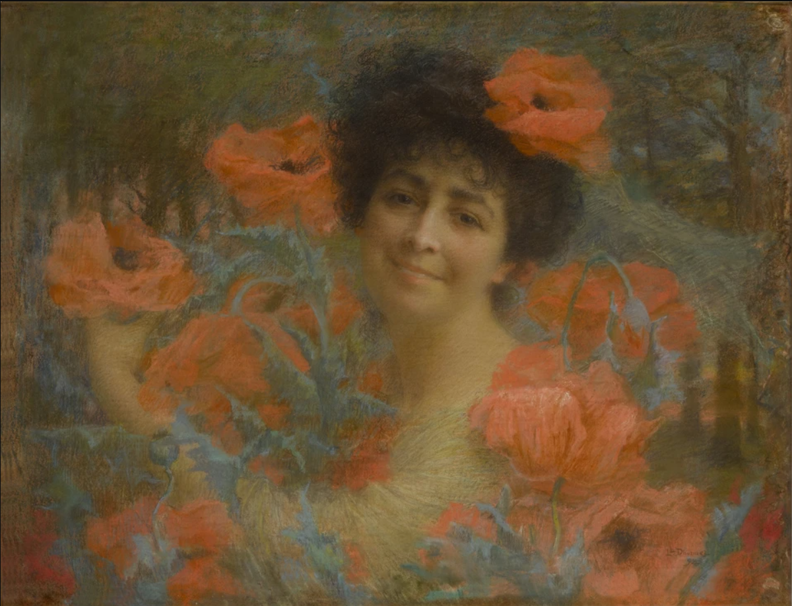
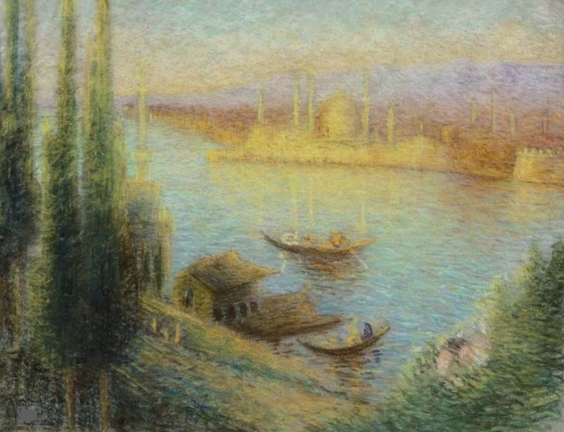

Lucien Lévy-Dhurmer
This home page will focus on aesthetics and serve as an introduction to what the page is about / who it is about
About The Artist
Born Lucien Lévy to a Jewish family in Algiers, French Algeria in 1865, he began studying drawing and sculpture in Paris at the Ecole Supérieure de Dessin et de Sculpture in 1879. He first exhibited at the Paris Salon of 1882 where he showed a small ceramic plaque. In 1887 Lévy began making his living near Cannes in southern France, overseeing the decoration of ceramics. From 1886 to 1895 he worked as a ceramic decorator and then as artistic director of the studio of Clément Massier. Around 1892 he signed his first pieces of ceramics, which were influenced by Islamic Art. In 1895 he left for Paris to begin a career in painting; around this time he visited Italy and was further influenced by art of the Renaissance.
In 1896 he exhibited his first pastels and paintings under the name Lucien Lévy-Dhurmer; he had added the last two syllables of his mother's maiden name (Goldhurmer), likely to differentiate himself from other people named Lévy. His paintings soon became popular with the public and among fellow artists as well. He earned high praise for the academic attention to detail with which he captured figures lost in a Pre-Raphaelite haze of melancholy, contrasted with bright Impressionist colouration. His portrait of writer Georges Rodenbach is perhaps the most striking example of this strange and extraordinary synergy.
After 1901 Lévy-Dhurmer moved away from expressly Symbolist content, incorporating more landscapes into his work because of his travels in Europe and North Africa. He continued to draw inspiration from music and attempted to capture works of great composers such as Beethoven in painted form.
Lévy-Dhurmer ultimately ended up passing away in Le Vésinet in 1953, at the age of 97.
Creative Portraiture

Nu
Pastel on paper
24 x 17 in.

Portrait of Marguerite De Schickler, Countesse Hubert De Pourtalès
Oil on canvas
10⅝ by 8¾ in.

Dancer in White
Oil on canvas
24 x 19 3/4 in.

La bourrasque, Executed in 1897
Pastel on paper
15 x 17 3/8 in.
Figurative Landscape

Femme entourée de fleurs
Pastel on paper
21 by 27 in.
Beethoven Mask
Pastel on paper
35 7/8 by 25 3/4 in

Portrait de jeune femme à la colombe
Watercolor over pencil lines
11 by 7 1/2 in
Landscapes and Cityscapes
Roman bridge... - Lot 167 - Les Andelys Enchères
Pastel on paper laid down on cardboard
14 1/4 by 17 3/4 in

LES ROSES D'ISPAHAN
Pastel on paper
19 by 25in

Fondouk
Oil on canvas
28 1/4 by 23 1/2 in.

The Bosphorus with Leander's Tower, Instanbul
Pastel on paper
17 1/4 by 22 1/2 in.
Interior Scenes
Le marchand de poteries
Pastel
23 1/2 by 18 1/2 in.

BOUQUET D'ŒILLETS DANS UN VASE
Pastel on paper
23⅝ x 18 in

Bretonne en prière
Oil on canvas
21 by 18 1/2 in.